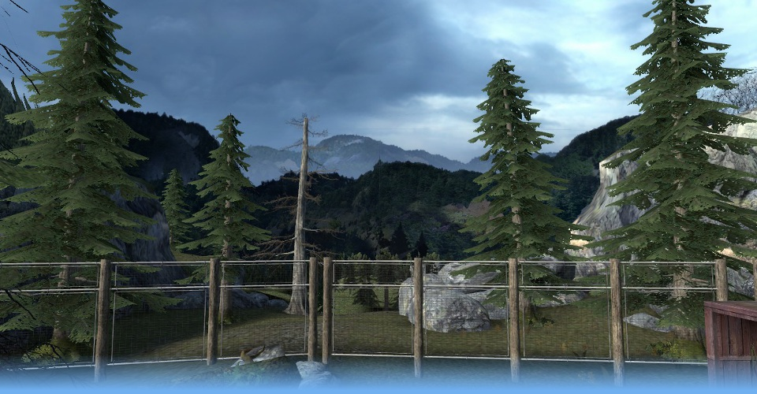

Gravity Falls
A level for Half-Life 2: Episode 2
A level I created as an entry to the ForestVille level design competition. Working your way through the forest, via a couple of stops, you need to turn off a Combine power generator. Of course, they won't be happy about this, so expect some resistance!
A map created for Half-Life 2 Episode 2 within a time limit, it is set in a Forest environment and includes unique physics puzzles and combat.
Released: August 2012
Download this map and see reviews here.